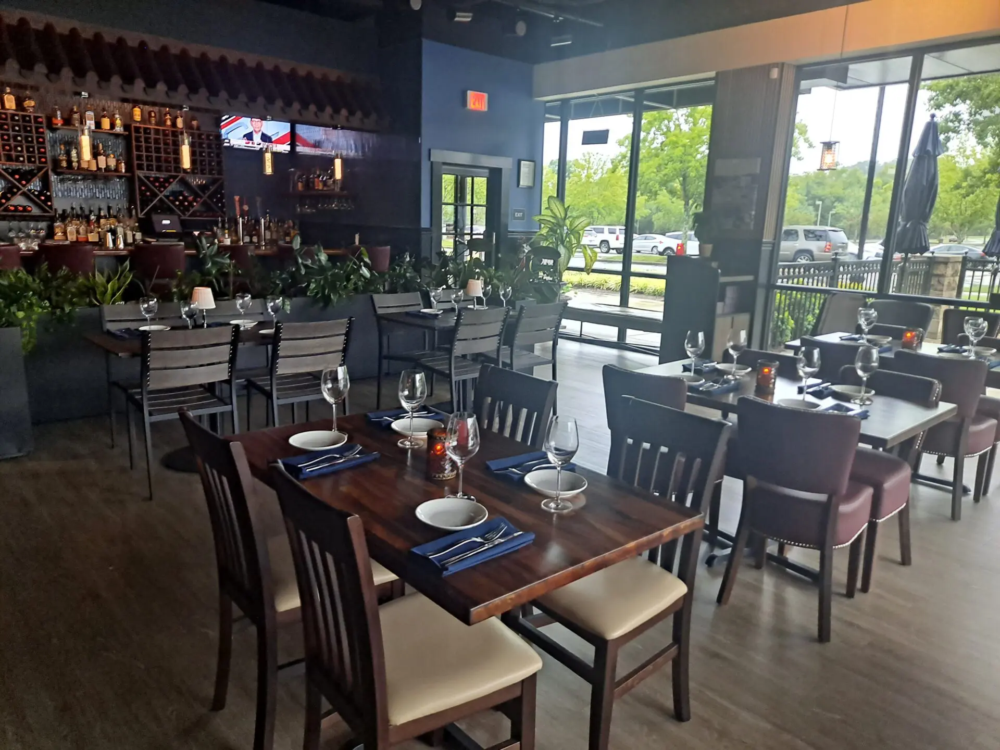

Menu
Carryout
Contact
Reservations
Rate Us
About Us
Reference
Welcome to Nature's Cafe!

About Us
At Nature's Cafe, it is here that we provide a top quality in our variety of food to our customers and hence, provide
our fellow vegetarians with the best service that they could ask for. We serve out diners with fresh vegetables and
dishes that can develop as favorites for our customers. At the Nature’s Cafe, our employees and staff can assure you
to give their best services to hold you a wonderful time at our beloved cafe. As for our dishes, we offer food through
many cuisines, with the loaded options of pre-meal appetizers,salads, pastas, wraps, desserts, and so much more! Keep
in mind, these dishes are made using natural goods and we use the healthiest of produce to bring the greatest of flavors
to our diners. Finally, we understand the importance of the environment and maintaining a sustainable group of species
of animals around the world. Therefore, we count on vegetables to prevent any harm to these animals, as we understand
the significance of all life around our ecosystems.Another way we can do our part to keep our environments sound is
recycling! To assure this, we use non-plastic items, especially straws, along with other items at the Nature’s Cafe
and include various recycle bins at our restaurant, as well. This is to help you, our diners, do a little part in making
our natural environment cleaner for animals that are of the utmost importance to our staff. Once again, on behalf of
everyone at the Nature’s Cafe, we are thankful to you for visiting, however, providing a friendly environment that unites
our community into trying our exquisite cuisines, and ensuring an eco-friendly environment for a better future amongst
all circles of life that strive in our beautiful planet. At Nature's Cafe, we work directly with local farmers to bring
you the freshest, most organic ingredients. Our farm-to-table approach means that every dish on our menu is made from
seasonal produce sourced from nearby farms,supporting sustainability and our local economy. We’re proud to partner with
farmers who prioritize eco-friendly practices, ensuring that the food we serve is both delicious and kind to the planet!